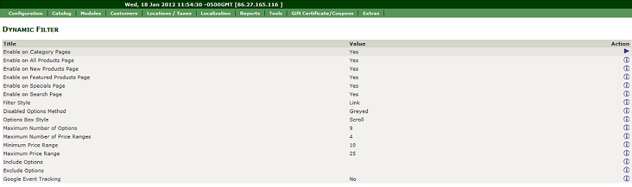
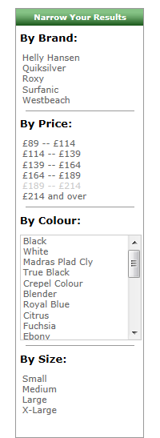
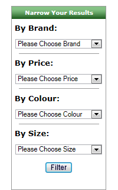
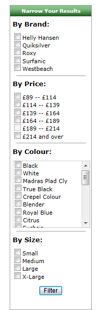
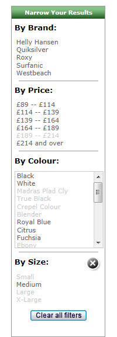
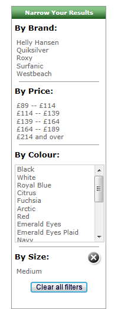
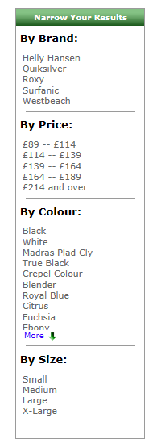

Dynamic Filter will allow your customers to filter the products listed on any product listing page (including All Products, New Products, Featured Products, Specials and Search Results) in your store.
Customers can filter by manufacturer, category, price and any attribute.
The module allows you among other things, to control which pages the filter appears on, the filter style (links, checkboxes or dropdowns) and also allows you to include or exclude attributes.
The Stock by Attribute module is supported (tested on version 4.7 but should work with all versions) if installed; only items with stock will be shown in the list.
Google Event Tracking is supported and has been tested to work with Simple Google Analytics v1.2.5 but should work with all versions.
!!!!!BACKUP YOUR STORE BEFORE YOU BEGIN!!!!!
There are different versions of the Dynamic Filter depending on which version of Zen Cart you are using, so you will need to follow the relevant installation instructions.
Installation of the module has been made as simple as possible and shouldn't take long for any stores which have not already modified any of the core files which this module has to modify.
Before you start you should rename all folders in the distribution named 'YOUR_TEMPLATE' to the template folder name you are using.
You will find 3 folders beneath the folder named 'dynamic_filter_1.3.9h', one contains new files, one template override files and the other modified core files.
If this template file hasn't already been modified for your store, the sample file included in this distribution can be copied into the store's template directory and will then override the standard version of the file included in the Zen Cart distribution.
If this template file has already been modified for your store, then you will need to copy the code changes from the sample file across to your modified file. The changes are clearly marked within the sample files (with “// bof dynamic filter x of x” and “// eof dynamic filter x of x” comments) in the distribution and should be easy enough to copy across, especially if a “diff” software package (such as DiffMerge or WinMerge) is used.
Do not make changes to your template files without taking a copy of them first so you can replace them later if needed!
Before you start you should rename all folders in the distribution named 'YOUR_TEMPLATE' to the template folder name you are using, and rename the 'admin' folder in the distribution to the admin folder name you are using.
You will find 3 folders beneath the folder named 'dynamic_filter_1.5.0', one contains new files, one template override files and the other modified core files.
If this template file hasn't already been modified for your store, the sample file included in this distribution can be copied into the store's template directory and will then override the standard version of the file included in the Zen Cart distribution.
If this template file has already been modified for your store, then you will need to copy the code changes from the sample file across to your modified file. The changes are clearly marked within the sample files (with “// bof dynamic filter x of x” and “// eof dynamic filter x of x” comments) in the distribution and should be easy enough to copy across, especially if a “diff” software package (such as DiffMerge or WinMerge) is used.
Do not make changes to your template files without taking a copy of them first so you can replace them later if needed!
There is no need to remove the Dynamic Filter module, as it can be completely disabled in admin (see Configuration).
If you do wish to remove the module, simply delete all the New Files loaded in step 1, delete (or replace with your original if the file was already present) Template Override Files loaded in step 2, then replace all the Modified Core Files loaded in step 3 with your original files.
Finally, run 'uninstall.sql' to remove the configuration switch.
Switching On
After the install, the filter is enabled on all category pages as well as all products, new products, featured products, specials and the search results page. However, the filter will not be displayed in your store before you switch it on.
To switch the filter on, go to Admin -> Tools -> Layout Boxes Controller and switch on the sidebox named 'sideboxes/YOUR_TEMPLATE/dynamic_filter.php'.
Admin Options
This module includes an admin option to enable/disable the module and more.
All controls can be accessed via Admin -> Configuration -> Dynamic Filter. The image below shows the admin controls.
| Admin controls  |
Enabling/Disabling the Filter
The first 6 switches allow you to control which pages the Dynamic Filter will be available on; it can be enabled or disabled on all category pages, all products, new products, featured products, specials and search results pages.
Just set the relevant switch to True or False.
Styling the Filter
The Dynamic Filter can be rendered in different styles depending on your preference.
For example, if a section has too many options you can choose to display that section in a minimized format.The following section describes the function of the styling switches.
| Filter Style 'Link'  |
Filter Style 'Dropdown - Multi'  |
Filter Style 'Checkbox - Multi'  |
| Disabled Options Method 'Greyed'  |
Disabled Options Method 'Hidden'  |
| Options Box Style 'Scroll' |
Options Box Style 'Expand'  |
Additional Settings
Dynamic Filter allows for event tracking in Google Analytics if the 'Filter Style' is set to either 'Link' or 'Checkbox - Single'.
Both the traditional ga.js and new asyncronous methods are supported.
If you wish to switch this function on, set Google Event Tracking to the desired method.
This will generate code to track customers adding and removing filters to help you analyse what they are looking for.
To switch this feature off, set it to 'No'.
Google event tracking requires javascript to be enabled and Google Analytics code active in your store, such as Simple Google Analytics
Optional (but recommended) Settings
Zen Cart comes as standard with a manufacturer/category shown at the top of category pages.
It is recommended that this is swithced off as the Dynamic Filter also has a manufacturer/category section.
To switch the standard Zen Cart filter off, go to Admin -> Configuration -> Product Listing and set 'Display Category/Manufacturer Filter' to off.
The Dynamic Filter sidebox heading is initially set to 'Narrow Your Results'. This can be changed if required.
To change it, open up file includes/languages/english/extra_definitions/YOUR_TEMPLATE/dynamic_filter_defines.php and change the following line to reflect the heading you require
All sub-headings are prefixed with the word 'By' and suffixed with a colon (':'). If you need to change these, open up file includes/languages/english/extra_definitions/YOUR_TEMPLATE/dynamic_filter_defines.php and change the following lines as you require
The manufacturer, category and price sub-headings are initially set to 'By Brand:', 'By Category:' and 'By Price:' respecitvely. These can also be changed if required.
To change them, open up file includes/languages/english/extra_definitions/YOUR_TEMPLATE/dynamic_filter_defines.php and change the following lines to reflect the sub-headings you require
All other sub-headings are generated by taking the name of the attribute (e.g, if your products have an attribute of colour, the heading would be 'By Colour:') so these can only be changed by changing the attribute name.
Each time a filter is applied it is added to the querystring in the URL. A prefix is used which is initially set to 'flt' e.g. when filtering by category you will see 'fltCategory[]=xx' in the querystring). This can be changed if required.
Open up file includes/languages/english/extra_definitions/YOUR_TEMPLATE/dynamic_filter_defines.php and change the following line to reflect the prefix you require
The querystring names for manufacturer, category and price are initially set to 'Brand', 'Category' and 'Price' respectively (e.g. when filtering by manufacturer you will see 'fltBrand[]=xx' in the querystring). This can be changed if required.
Open up file includes/languages/english/extra_definitions/YOUR_TEMPLATE/dynamic_filter_defines.php and change the following lines to reflect the names you require
All other querystring names are generated by taking the name of the attribute (e.g, if your products have an attribute of size, the querystring name would be 'fltSize') so these can only be changed by changing the attribute name.
Dynamic Filter has been tested and is fully working with Ceon URI mapping version 4.0.7 but should work with earlier versions of this software too.
It has not been tested but shouldn't be too hard to modify to work with any other mapping software.
Only the file below would need to be editted. Scanning this file for 'CEON' will show the specific code edits that allow Dynamic Filter to work with Ceon URI mapping.
You can easily hook in to the Dynamic Filter by simply adding the required filters to the end of the querystring.
For example, if your store sells jackets and pants and you would like to direct a banner ad to New Jackets and Pants you could use the following in the Banner URL
If you are using Ceon URI mapping software, you would (assuming your 'products_new' page is mapped to 'NewProducts') use
You would just need to replace 'xx' with your Jackets category ID and 'yy' with your Pants category ID.
You can also hook in to the filter with php.
For example if you had a category called 'Jeans' and within that category you sold Levis jeans, you could add the link 'More Levis Jeans' to the product page to direct customers to view more Levis jeans as follows
This program is free software: you can redistribute it and/or modify it under the terms of the GNU General Public License as published by the Free Software Foundation, either version 3 of the License, or (at your option) any later version. This program is distributed in the hope that it will be useful, but WITHOUT ANY WARRANTY; without even the implied warranty of MERCHANTABILITY or FITNESS FOR A PARTICULAR PURPOSE. See the GNU General Public License for more details.
Always backup your shop and database before making changes.